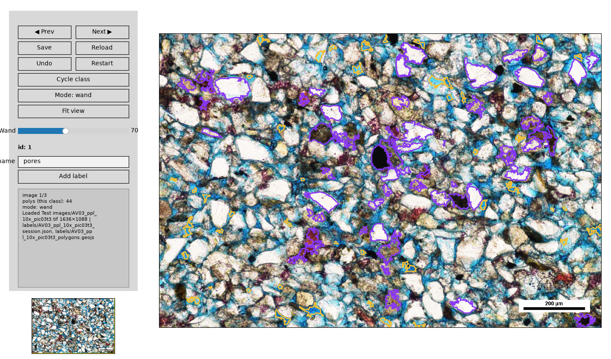
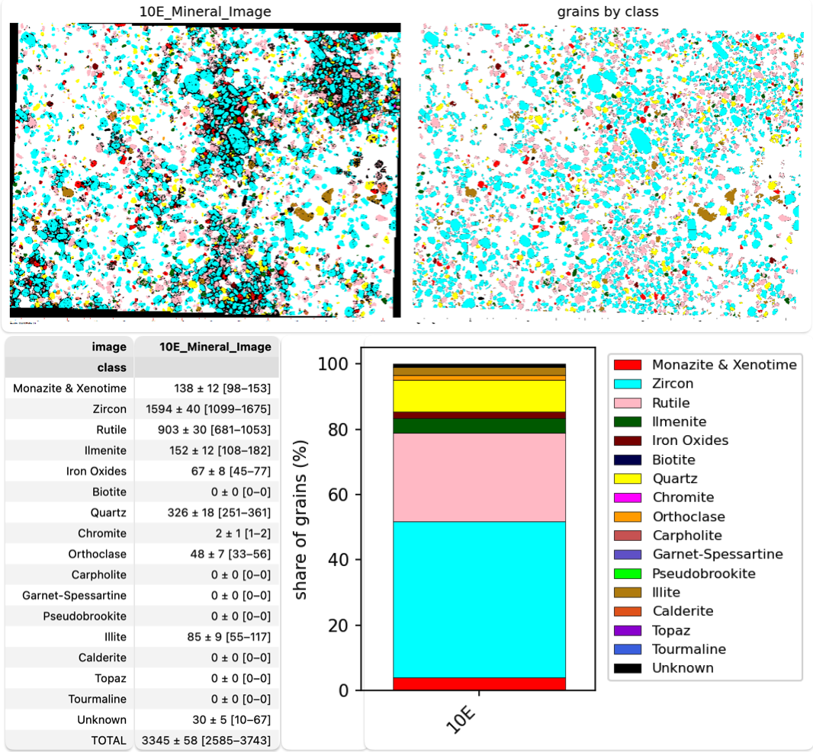
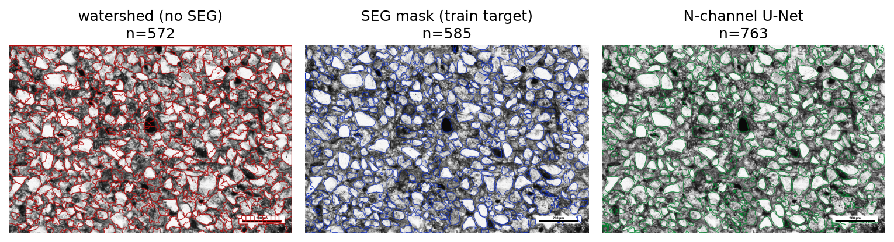

pyPetrograph
pyPetrograph (version 0.0.6 in the current notes) is a machine-learning toolkit for thin-section petrography. You can paint features on an RGB photo and train a LightGBM pixel model to map the area percent of each class. The demo treats pores against grains and reads pore area as porosity. You can count grains on a painted mineral map by matching a color legend. Or you can stack several images of the same field, plane-polarized light, cross-polarized light, or others, and segment grains from that overlay.
The tool is under development. Use it with caution. Notebooks, interfaces, and numbers can still change. For finer grain boundaries there is optional support for SegmentEveryGrain (Zoltan Sylvester). SAM 2.1 weights, about 860 MB, are a further opt-in on that project’s page, not part of the default install.
Larry Syu-Heng Lai leads the current version, from early code written by Zoltan Sylvester, at the Quantitative Clastics Laboratory, Bureau of Economic Geology. The work is also with Priyanka Periwal, Lucy Tingwei Ko, Kelly Hattori, and Amanda Calle, across groups in the Bureau and the e-MAGE lab. Example thin sections live in Test images/. Results go to outputs/.
Install
From PyPI:
pip install pypetrographFrom the repository, create the conda environment in environment.yml, activate pypetrograph, and install the checkout in editable mode. The optional grain-boundary model is a separate install of SegmentEveryGrain into that same environment.
Hand labels and area percent
pyPetrograph_rgb_porosity.ipynb is the labeling demo. You paint a few examples of each feature you care about (pores, grains, cement, and so on), using color, edge sharpness, and microtexture. A LightGBM pixel classifier learns those examples. Random forest or XGBoost can be used instead. The model maps the rest of the photo and reports the area percent of each class with a confidence range. In the demo, pore area is the porosity.
Grain counts on a mineral map
pyPetrograph_mineralmap_count.ipynb starts from a color mineral map, one flat color per mineral, plus a legend. It matches pixels to the legend, splits grains that touch, and counts grains in each class. The figure below shows the counts, the table, and the class-share bars.
Grains from a multi-image overlay
pyPetrograph_multimodal_grains.ipynb is for contacts that one illumination misses. A boundary drawn from plane-polarized light alone can skip a contact that appears only under crossed polars, and the reverse is true as well. The notebook aligns the two views of the same field and stacks them. Grain outlines then proceed in this order:
- Watershed. A first guess from brightness, with no training.
- SegmentEveryGrain mask. An optional U-Net. That saved mask is the training target.
- N-channel U-Net. About 25 MB, already stored as
outputs/models/grain_unet_ppl-xpl.keras, trained on the stacked plane- and cross-polarized images to copy the SegmentEveryGrain mask. The notebook loads that model. It does not train it again.
GrainPlot is a further optional check window. SAM 2.1, about 860 MB and off by default, is only for still finer shapes.
License
GNU Affero General Public License 3.0 or later. The license file is in the repository.

